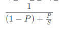
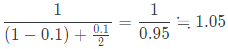

암달의 법칙
어떤 작업의 시간 효율을 개선할 때, 전체 작업시간에 대해 P만큼의 작업시간을 차지하는 작업의 효율을 S만큼 향상시켰다 가정하자. 그렇다면 전체 작업 효율은 다음과 같이 향상된다.

가령, 전체 작업 시간 중에 10%를 차지하는 작업의 속도를 2배 증가시켰다면, 전체 작업 속도는 약 1.05배로 증가한다.

다음과 같은 의미를 지닌다.
- 전체 작업의 효율을 최대한 증가시키고 싶다면 그 중에 가장 비중이 큰 작업부터 초점을 맞추는 것이 좋다.
- 일부 작업들이 더 이상 개선의 여지가 없을 경우 전체 작업이 최대 어느정도의 개선 효율을 보일 수 있는지에 대해 예측이 가능하다.
병렬 컴퓨팅을 할 경우, 일부 병렬화 가능한 작업들은 사실상 계산에 참여하는 컴퓨터의 개수에 비례해서 속도가 늘어난다.
이러한 경우 암달의 법칙에 의해서 전체 수행시간의 개선 효과는 병렬화가 불가능한 작업들의 비중에 크게 영향을 받게 된다.
즉, 아무리 컴퓨터의 개수가 늘어나더라도 위의 그림에서 보는 것 처럼 속도의 한계는 정해져있다는 것.